토목기사 (2013-06-02 기출문제)
1과목: 응용역학
1. 체적탄성계수 K를 탄성계수 E와 푸아송비 v로 옳게 표시한 것은?
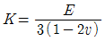
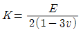
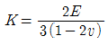
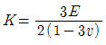
(정답률: 79%)

2. 다음 트러스에서
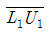
부재의 부재력은?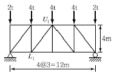
- 2.2t(인장)
- 2.5t(인장)
- 2.2t(압축)
- 2.5t(압축)
(정답률: 73%)
3. 그림과 같이 밀도가 균일하고 무게가 W인 구(球)가 마찰이 없는 두 벽면 사이에 놓여 있을때, 반력 RA의 크기는?
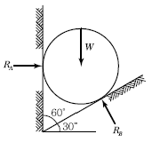
- 0.500W
- 0.577W
- 0.707W
- 0.866W
(정답률: 82%)
4. 아래 그림과 같은 불규칙한 단면의 A-A축에대한 단면 2차 모멘트는 35×106 mm4이다. 만약 단면의 총 면적이 1.2×104mm2라면 B-B 축에 대한 단면 2차 모멘트는 얼마인가? (단, D-D축은 단면의 도심을 통과한다.)
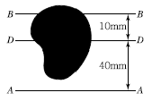
- 17×106 mm4
- 15.8×106 mm4
- 17×105 mm4
- 15.8×105 mm4
(정답률: 71%)
5. 지름 d＝120cm, 벽두께 t＝0.6cm인 긴 강관이 q＝20kg/cm2의 내압을 받고 있다. 이 관벽 속에 발생하는 원환응력 σ의 크기는?
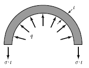
- 300kg/cm2
- 900kg/cm2
- 1,800kg/cm2
- 2,000kg/cm2
(정답률: 73%)
6. 다음과 같은 부정정보에서 A의 처짐각 θA는? (단, 보의 휨강성은 EI이다.)
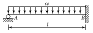
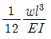
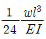
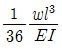
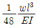
(정답률: 58%)
7. 단주에서 단면의 핵이란 기둥에서 인장응력이 발생되지 않도록 재하되는 편심거리로 정의된다. 지름 40cm인 원형 단면의 핵의 지름은?
- 2.5cm
- 5.0cm
- 7.5cm
- 10.0cm
(정답률: 67%)
8. 다음 그림과 같은 T형 단면에서 도심축 C-C축의 위치 X는?
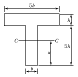
- 2.5h
- 3.0h
- 3.5h
- 4.0h
(정답률: 78%)
9. 그림과 같은 구조물에서 B 지점의 휨모멘트는?
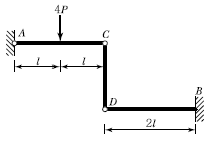
- -3Pl
- -4Pl
- -6Pl
- - 12Pl
(정답률: 70%)
10. 그림과 같은 3힌지(Hinge) 아치에서 B점의 수평 반력 HB를 구하면?
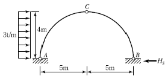
- 2t
- 3t
- 4t
- 6t
(정답률: 74%)
11. 다음 그림의 단순보에 이동하중이 작용할 때 절대 최대 휨모멘트를 구한 값은?
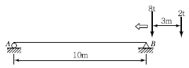
- 18.20t ∙ m
- 22.09t ∙ m
- 26.76t ∙ m
- 32.80t ∙ m
(정답률: 73%)
12. 그림과 같은 단순보의 B지점에 M＝2t∙m를 작용시켰더니 A 및 B지점에서의 처짐각이 각각 0.08rad과 0.12rad이었다. 만일 A지점에서 3t∙m의 단모멘트를 작용시킨다면 B지점에서 의 처짐각은?
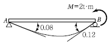
- 0.08radian
- 0.10radian
- 0.12radian
- 0.15radian
(정답률: 70%)
13. 그림과 같은 연속보에서 B지점 모멘트 MB는? (단, EI는 일정하다.)
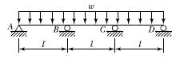
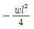
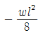
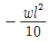
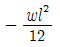
(정답률: 41%)
14. 균질한 강봉에 하중이 아래 그림과 같이 가해질때 D점이 움직이지 않게 하기 위해서는 하중 P3에 추가하여 얼마의 하중(P)이 더 가해져야 하는가? (단, P1= 12t, P2 = 8t, P3 = 6t이다.)
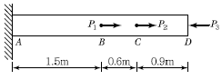
- 5.6t
- 7t
- 11.6t
- 14t
(정답률: 48%)
15. 그림 (a)와 (b)의 중앙점의 처짐이 같아지도록 그림 (b)의 등분포하중 w를 그림 (a)의 하중 P의 함수로 나타내면 얼마인가?
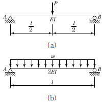
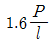
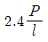
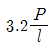
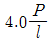
(정답률: 62%)
16. 어떤 기둥의 지점조건이 양단고정인 장주의 좌굴하중이 100t이었다. 이 기둥의 지점조건이 일단힌지, 타단고정으로 변경되면 좌굴하중은?
- 50t
- 100t
- 200t
- 400t
(정답률: 68%)
17. 그림과 같은 I 형 단면에 작용하는 최대전단응력은? (단, 작용하는 전단력은 4,000kg이다.)
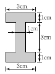
- 897.2kg/cm2
- 1,065.4kg/cm2
- 1,299.1kg/cm2
- 1,444.4kg/cm2
(정답률: 65%)
18. 그림과 같은 단순보에서 B단에 모멘트 하중 B이 작용할 때 경간 AB중에서 수직 처짐이 최대가 되는 곳의 거리 x는? (단, EI는 일정하다.)
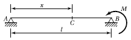
- x＝0.500l
- x＝0.577l
- x＝0.667l
- x＝0.750l
(정답률: 82%)
19. 그림과 같은 트러스에서 A점에 연직하중 P가 작용할 때 A점의 연직처짐은? (단, 부재의 축 강도는 모두 EA이고, 부재의 길이는 AB= 3l, AC=5l이며, 지점 B와 C의 거리는 4l이다.)
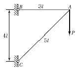
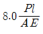
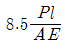
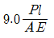
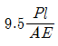
(정답률: 71%)
20. 구조해석의 기본 원리인 겹침의 원리(Principle of Superposition)를 설명한 것으로 틀린 것은?
- 탄성한도 이하의 외력이 작용할 때 성립한다.
- 부정정 구조물에서도 성립한다.
- 외력과 변형이 비선형관계가 있을 때 성립한다.
- 여러 종류의 하중이 실린 경우 이 원리를 이용하면 편리하다.
(정답률: 66%)
2과목: 측량학
21. 지구반지름 r＝6,370km이고 거리의 허용오차가 1/105이면 직경 몇 km까지를 평면측량으로 볼 수 있는가?
- 약 69km
- 약 64km
- 약 36km
- 약 22km
(정답률: 42%)
22. 곡선반지름이 700m인 원곡선을 70km/h의 속도로 주행하려 할 때 캔트(Cant)는? (단, 궤간은 1.073m, 중력가속도는 9.8m/s2로 한다.)
- 57.14mm
- 58.14mm
- 59.14mm
- 60.14mm
(정답률: 65%)
23. 항공사진의 주점에 대한 설명으로 옳지 않은 것은?
- 주점에서는 경사사진의 경우에도 경사각에 관계없이 수직사진의 축척과 같은 축척이 된다.
- 인접사진과의 주점길이가 과고감에 영향을 미친다.
- 주점은 사진의 중심으로 경사사진에서는 연직점과 일치하지 않는다.
- 주점은 연직점, 등각점과 함께 항공사진의 특수 3점이다.
(정답률: 47%)
24. 트래버스측량을 한 전체연장이 1.9km이고 위거오차가 ＋0.21m, 경거오차가 －0.29m였다면 폐합비는?
- 1/5, 156
- 1/5, 186
- 1/5, 307
- 1/6, 168
(정답률: 45%)
25. 평판측량 시 평판을 측점에 세울 때의 세 조건 중 하나인 표정(Orientation)에 대한 설명으로 옳은 것은?
- 평판이 일정한 방향이나 방위를 갖도록 설정하는 것
- 평판면을 수평이 되도록 하는 것
- 평판 상의 측점 위치와 지상의 측점 위치가 동일 수직선 상에 있도록 하는 것
- 앨리데이드의 기포관이 정중앙에 오도록 맞추는 것
(정답률: 38%)
26. 클로소이드의 종류 중 복합형에 대한 설명으로 옳은 것은?
- 직선부, 클로소이드, 원곡선, 클로소이드, 직선부가 연속되는 평면 선형
- 반향곡선 사이에 2개의 클로소이드를 삽입한 평면 선형
- 같은 방향으로 구부러진 2개의 클로소이드 사이에 직선부를 삽입한 평면 선형
- 같은 방향으로 구부러진 2개 이상의 클로소이드로 이어진 평면 선형
(정답률: 34%)
27. 노선측량에서 교각 I＝40°, 곡선반지름 R＝150m, 중심말뚝 간의 거리 l＝20m이며 노선의 시점에서 교점까지의 추가 거리가 240.70m일 때 시단현의 편각은?
- 1° 40ʹ27ʺ
- 2° 39ʹ17ʺ
- 3° 28ʹ17ʺ
- 0° 56ʹ27ʺ
(정답률: 49%)
28. 수심이 H인 하천의 유속을 3점법에 의해 관측할 때, 관측 위치로 옳은 것은?
- 수면에서 0.1H, 0.5H, 0.9H가 되는 지점
- 수면에서 0.2H, 0.6H, 0.8H가 되는 지점
- 수면에서 0.3H, 0.5H, 0.7H가 되는 지점
- 수면에서 0.4H, 0.5H, 0.6H가 되는 지점
(정답률: 75%)
29. 측지학과 관련된 설명으로 옳은 것은? (단, N：지구의 횡곡률 반지름, R：지구의 자오선 곡률반지름, a：타원지구의 적도반지름, b：타원지구의 극반지름)
- 측량의 원점에서의 평균 곡률반지름은
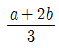
이다. - 타원에 대한 지구의 곡률반지름은
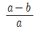
로 표시된다. - 지구의 편평률은
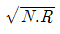
로 표시된다. - 지구의 이심률(편심률)은
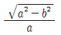
로 표시 된다.
(정답률: 59%)
30. 지형측량에서 지성선(地性線)에 대한 설명으로 옳은 것은?
- 등고선이 수목에 가려져 불명확할 때 이어주는 선을 의미한다.
- 지모(地貌)의 골격이 되는 선을 의미한다.
- 등고선에 직각방향으로 내려 그은 선을 의미 한다.
- 곡선(谷線)이 합류되는 점들을 서로 연결한 선을 의미한다.
(정답률: 68%)
31. 수준측량에서 전시와 후시의 거리를 같게 하여 소거할 수 있는 오차가 아닌 것은?
- 지구의 곡률에 의해 생기는 오차
- 기포관축과 시준축이 평행되지 않기 때문에 생기는 오차
- 시준선상에 생기는 빛의 굴절에 의한 오차
- 표척의 조정 불완전으로 인해 생기는 오차
(정답률: 68%)
32. 교호수준측량의 결과가 아래와 같고, A점의 표고가 10m일 때 B점의 표고는?
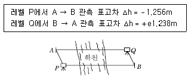
- 8.753m
- 9.753m
- 11.238m
- 11.247m
(정답률: 58%)
33. 100m의 측선을 20m 줄자로 관측하였다. 만약 1회의 관측에 ＋4mm의 정오차와 ±3mm의 부정오차가 있었다면 이 측선의 거리는?
- 100.010±0.007m
- 100.020±0.007m
- 100.010±0.015m
- 100.020±0.015m
(정답률: 71%)
34. 삼각망의 종류 중 유심삼각망에 대한 설명으로 옳은 것은?
- 삼각망 가운데 가장 간단한 형태이며 측량의 정확도를 얻기 위한 조건이 부족하므로 특수한 경우 외에는 사용하지 않는다.
- 거리에 비하여 측점수가 가장 적으므로 측량이 간단하며 조건식의 수가 적어 정도가 낮다. 노선 및 하천측량과 같이 폭이 좁고 거리가 먼 지역의 측량에 사용한다.
- 광대한 지역의 측량에 적합하며 정확도가 비교적 높은 편이다.
- 가장 높은 정확도를 얻을 수 있으나 조정이 복잡하고 포함된 면적이 작으며 특히 기선을 확대할 때 주로 사용한다.
(정답률: 57%)
35. 상차라고도 하며 그 크기와 방향(부호)이 불규칙적으로 발생하고 확률론에 의해 추정할 수 있는 오차는?
- 착오
- 정오차
- 개인오차
- 우연오차
(정답률: 73%)
36. 사진측량의 특징에 대한 설명으로 옳지 않은 것은?
- 기상의 제약 없이 측량이 가능하다.
- 정량적 관측이 가능하다.
- 측량의 정확도가 균일하다.
- 정성적 관측이 가능하다.
(정답률: 71%)
37. 평면직각좌표에서 A점의 좌표 xA＝123.543m, yA＝－26.654m이고 B점의 좌표 xB＝32.271m, yB＝221.268m라면 측선 AB의 방위각은?
- 20° 12ʹ40ʺ
- 69° 47ʹ20ʺ
- 110° 12ʹ40ʺ
- 249° 47ʹ20ʺ
(정답률: 41%)
38. 그림과 같은 부지측량의 결과로부터 성토량과 절토량이 균형을 이루도록 정지작업을 해야 할표고는?
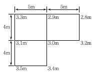
- 3.00m
- 3.⑤m
- 3.10m
- 3.15m
(정답률: 45%)
39. 도면에서 곡선에 둘러싸여 있는 부분의 면적을 구하기에 가장 적합한 방법은?
- 좌표법에 의한 방법
- 배횡거법에 의한 방법
- 삼사법에 의한 방법
- 구적기에 의한 방법
(정답률: 74%)
40. 해도와 같은 지도에 이용되며, 주로 하천이나 항만 등의 심천측량을 한 결과를 표시하는 방법으로 가장 적당한 것은?
- 채색법
- 영선법
- 점고법
- 음영법
(정답률: 69%)
3과목: 수리학 및 수문학
41. 관물이 저수지에서 25mm 원관을 통해 600m를 흘러 대기 중으로 유출된다. 유출구가 저수지 수면보다 0.3m 아래에 위치하고 있을 때 관내의 흐름이 층류이면 유출구에서의 유량은? (단, 마찰손실만 있는 것으로 보고, 물의 동점성 계수는 1.334×10-6m2/sec이다.)(오류 신고가 접수된 문제입니다. 반드시 정답과 해설을 확인하시기 바랍니다.)
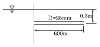
- 35cm3/sec
- 594cm3/sec
- 1,188cm3/sec
- 1,464cm3/sec
(정답률: 28%)
42. Darcy의 법칙에 대한 설명으로 옳지 않은 것은?
- Darcy의 법칙은 지하수의 층류 흐름에 대한 마찰저항공식이다.
- 투수계수는 물의 점성계수에 따라서도 변화한다.
- Reynolds 수가 클수록 안심하고 적용할 수 있다.
- 평균유속이 동수경사와 비례관계를 가지고 있는 흐름에 적용될 수 있다.
(정답률: 73%)
43. 어느 지역에서 100분간 200mm의 강우가 발생 하였다고 하면 이때 강우강도는?
- 333mm/hr
- 200mm/hr
- 120mm/hr
- 100mm/hr
(정답률: 63%)
44. 하상계수(河狀係數)에 대한 설명으로 옳은 것은?
- 대하천의 주요 지점에서의 풍수량과 저수량의 비
- 대하천의 주요 지점에서의 최소유량과 최대 유량의 비
- 대하천의 주요 지점에서의 홍수량과 하천유지 유량의 비
- 대하천의 주요 지점에서의 최소유량과 갈수량의 비
(정답률: 76%)
45. 유역면적이 0.2km2인 어느 유역에 강우가 20mm/30min로 지속적으로 내렸을 때 유역출구에서의 관측된 첨두유출량이 1m3/sec이었다면 이 유역의 유출계수는? (단, 합리식으로 계산할 것)
- 0.15
- 0.25
- 0.35
- 0.45
(정답률: 63%)
46. 측정된 강우량 자료가 기상학적 원인 이외에 다른 영향을 받았는지의 여부를 판단하는 방법 즉, 일관성(Consistency)에 대한 검사방법은?
- 순간 단위유량도법
- 합성 단위유량도법
- 이중 누가우량 분석법
- 선행 강수 지수법
(정답률: 76%)
47. 조도계수 n＝0.03, 수면경사 1/10,000인 직사각형 수로에 유량이 100m3이 되게 하려고 할때, 수리상 유리한 단면의 폭(B)은? (단, Manning의 평균 유속공식을 적용)
- 8.48m
- 10.52m
- 12.97m
- 15.57m
(정답률: 47%)
48. 0.3m3/sec의 물을 실양정 45m의 높이로 양수 하는 데 필요한 펌프의 동력은? (단, 마찰손실수 두는 18.6m이다.)
- 186.98kW
- 196.98kW
- 214.4kW
- 224.4kW
(정답률: 60%)
49. Chezy의 평균유속공식에서 평균유속계수 C를 Manning의 평균유속공식을 이용하여 표현한 것으로 옳은 것은?
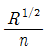
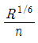
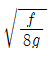
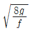
(정답률: 45%)
50. 유수 중에 물체가 있는 경우, 흐름방향의 물체의 투영면적 A, 유속 V, 유체의 밀도 p그리고 항력계수를 CD라고 하면 항력(抗力) D는?
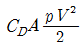
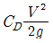
- CDApV2
(정답률: 67%)
51. 우물에서 장기간 양수를 한 후에도 수면강하가 일어나지 않는 지점까지의 우물로부터 거리(범위)를 무엇이라 하는가?
- 용수효율권
- 대수층권
- 수류영역권
- 영향권
(정답률: 63%)
52. 층류와 난류(亂流)에 관한 설명으로 옳지 않은 것은?
- 층류란 유수(流水) 중에서 유선이 평행한 층을 이루고 흐르는 흐름이다.
- 층류에서 난류로 변할 때의 유속과 난류에서 층류로 변할 때의 유속은 같다.
- 층류와 난류를 레이놀즈 수에 의하여 구별할 수있다.
- 원관 내 흐름의 한계 레이놀즈 수는 약 2,000이다.
(정답률: 61%)
53. 원관 내에 물이 반(半)만 차서 흐르고 있다. 관경(管經)을 D라고 할 때 경심(동수반경)은?
- D
- D/2
- D/4
- D/8
(정답률: 71%)
54. 오리피스(Orifice)의 이론유속 V=√2gh는 다음 중 어느 이론으로부터 유도되는 특수한 경우인 가? (단, V：유속, g：중력가속도, h：수두차)
- 베르누이(Bernoulli)의 정리
- 레이놀즈(Reynolds)의 정리
- 벤투리(Venturi)의 이론식
- 운동량 방정식 이론
(정답률: 65%)
55. 단위도(Unit Hydrograph)에 관한 설명으로 옳지 않은 것은?
- 어느 유역에 지속시간 t의 유효우량이 1cm 또는 1inch 내렸을 때의 직접유출 수문곡선이다.
- 단위도 작성시 필요한 기본가정은 일정기저시간 가정, 비례가정, 중첩가정이다.
- 장시간 지속시간의 단일 호우사상을 선택하여 대유역 면적에 적용할 때에 정확한 결과를 얻을 수 있다.
- 단위도 작성에는 직접유출량, 강우지속시간, 유역면적 등이 필요하다.
(정답률: 53%)
56. 어느 유체의 압축성을 무시할 수 있는 경우는 그 유체의 무엇을 무시할 수 있는 경우에만 가능한가?
- 비중의 변화
- 밀도의 변화
- 속도의 변화
- 점성의 변화
(정답률: 52%)
57. 뉴톤의 점성법칙(粘性法則)에서 점성계수 μ의 차원(次元)으로 옳은 것은?
- [FL-1T-1]
- [FL-1T]
- [FL-2T]
- [FL-1T-2]
(정답률: 26%)
58. 개수로에 댐을 만들 때 그 상류에 생기는 곡선은?
- 배수곡선
- 저하곡선
- 수리특성곡선
- 유량곡선
(정답률: 77%)
59. 삼각위어의 수두를 H 라 할 때 위어를 통해 흐르는 유량 Q와 비례하는 것은?
(정답률: 74%)
60. 축척이 1 : 50인 하천 수리모형에서 원형 유량 10000m3/sec에 대한 모형 유량은?
- 0.40m3/sec
- 0.566m3/sec
- 14.142m3/sec
- 28.284m3/sec
(정답률: 56%)
4과목: 철근콘크리트 및 강구조
61. 직사각형 단순보에서 계수 전단력 Vu70kN을 전단철근 없이 지지하고자 할 경우 필요한 최소유효깊이 d는? (단, b＝400mm, fck＝24MPa, fy＝350MPa)
- 426mm
- 572mm
- 611mm
- 751mm
(정답률: 65%)
62. As＝4,000mm2, Asʹ＝1,500mm2로 배근된 그림과 같은 복철근 보의 탄성처짐이 15mm이다. 5년 이상의 지속하중에 의해 유발되는 장기처짐은 얼마인가?
- 15mm
- 20mm
- 25mm
- 30mm
(정답률: 71%)
63. 플레이트 보(Plate Girder)의 경제적인 높이는 다음 중 어느 것에 의해 구해지는가?
- 휨모멘트
- 전단력
- 비틀림모멘트
- 지압력
(정답률: 57%)
64. 그림과 같은 캔틸레버보에 활하중 wL＝25kN/m 이 작용할 때 위험단면에서 전단철근이 부담해야 할 전단력은? (단, 콘크리트의 단위무게＝ 25kN/m3, fck＝24MPa, fy＝300MPa이고, 하중계수와 하중조합을 고려하시오.)
- 69.5kN
- 73.7kN
- 84.8kN
- 92.7kN
(정답률: 50%)
65. 설계휨강도가 φMn＝350kN ∙ m인 단철근 직사각형 보의 유효깊이 d는? (단, 철근비 p＝0.014, bw＝350mm, fck＝21MPa, fy＝350MPa이고, 이 단면은 인장지배단면이다.)
- 462mm
- 528mm
- 574mm
- 651mm
(정답률: 35%)
66. 아래 그림과 같은 T형 보에서 등가 직사각형 응력 블록의 깊이(a)는? (단, fck＝21MPa, fy＝350MPa, As＝7,652mm2)
- 178mm
- 187mm
- 194mm
- 217mm
(정답률: 66%)
67. 1방향 철근콘크리트 슬래브에서 fy= 450MPa인 이형철근을 사용한 경우 수축·온도철근 비는?
- 0.0016
- 0.0018
- 0.0020
- 0.0022
(정답률: 55%)
68. 그림과 같은 단면의 균멸모멘트 Mcr은? (단, fck＝24MPa, fy＝400MPa)
- 30.8kN∙m
- 38.6kN∙m
- 28.2kN∙m
- 22.4kN∙m
(정답률: 70%)
69. 옹벽의 설계 일반에 대한 설명으로 틀린 것은?
- 전도 및 지반지지력에 대한 안정조건은 만족하지만, 활동에 대한 안정조건만을 만족하지 못할 경우 활동방지벽 혹은 횡방향 앵커 등을 설치하여 활동저항력을 증대시킬 수 있다.
- 활동에 의한 저항력은 옹벽에 작용하는 수평력의 1.5배 이상이어야 한다.
- 전도에 대한 저항휨모멘트는 횡토압에 의한 전도모멘트의 2.0배 이상이어야 한다.
- 지반에 유발되는 최대 지반반력은 지반의 허용지지력 이상이어야 한다.
(정답률: 47%)
70. 단철근 직사각형보에서 균형파괴의 단면이 되기 위한 중립축 위치 c와 유효깊이 d의 비는 얼마인가? (단, fck＝21MPa, fy＝350MPa, b=360mm, d=700mm)
- c/d＝0.51
- c/d＝0.63
- c/d＝0.43
- c/d＝0.72
(정답률: 62%)
71. 그림과 같은 리벳 연결에서 리벳의 허용력은? (단, 리벳 지름은 12mm이며, 리벳의 허용 전단응력은 200MPa, 허용 지압응력은 400MPa이다.)
- 60.2kN
- 55.2kN
- 45.2kN
- 40.2kN
(정답률: 54%)
72. 철근의 부착강도에 영향을 주는 요인이 아닌 것은?
- 철근의 인장강도
- 철근의 표면 상태
- 콘크리트의 압축강도
- 철근의 피복두께
(정답률: 46%)
73. 프리스트레스트 콘크리트 중 포스트덴션 방식의 특징에 대한 설명으로 틀린 것은?
- 부착시키지 않은 PSC 부재는 부착시킨 PSC 부재에 비하여 파괴강도가 높고, 균열 폭이 작아지는 등 역학적 성능이 우수하다.
- PS 강재를 곡선상으로 배치할 수 있어서 대형 구조물에 적합하다.
- 프리캐스트 PSC 부재의 결합과 조립에 편리하게 이용된다.
- 부착시키지 않은 PSC 부재는 그라우팅이 필요하지 않으며, PS 강재의 재긴장도 가능하다.
(정답률: 55%)
74. 강도설계법에서 인장철근 D29(공칭 직경 db＝28.6mm)를 정착시키는 데 소요되는 기본 정착길이는? (단, fck＝24MPa, fy300MPa으로 한다.)
- 682mm
- 785mm
- 827mm
- 1,⑤1mm
(정답률: 67%)
75. 그림과 같은 맞대기 용접의 용접부에 생기는 인장응력은 얼마인가?
- 50MPa
- 70.7MPa
- 100MPa
- 141.4MPa
(정답률: 74%)
76. 그림에 나타난 단철근 직사각형보에서 공칭 휨강도(Mn)에 도달할 때 인장철근의 변형률(εt)은 얼마인가? (단, 철근 D22 4개의 단면적 1,548mm2, fck＝35MPa, fy＝400MPa)
- 0.0047
- 0.0085
- 0.0126
- 0.0187
(정답률: 59%)
77. 철근 콘크리트의 기둥에 관한 구조세목으로 틀린 것은?
- 비합성 압축부재의 축방향 주철근 단면적은 전체 단면적의 0.01배 이상, 0.08배 이하로 하여야한다.
- 압축부재의 축방향 주철근의 최소 개수는 나선 철근으로 둘러싸인 경우 6개로 하여야 한다.
- 압축부재의 축방향 주철근의 최소 개수는 삼각형 띠철근으로 둘러싸인 경우 3개로 하여야 한다.
- 띠철근의 수직간격은 축방향 철근지름의 48배이하, 띠철근이나 철선지름의 16배 이하, 또한 기둥단면의 최대치수 이하로 하여야 한다.
(정답률: 53%)
78. 철근콘크리트 구조물 설계시 철근 간격에 대한 설명 중 옳지 않은 것은? (단, 굵은 골재의 최대 치수에 관련된 규정은 만족하는 것으로 가정한다.)
- 동일 평면에서 평행한 철근 사이의 수평 순간격은 25mm 이상, 또한 철근의 공칭지름 이상으로 하여야 한다.
- 나선철근과 띠철근이 배근된 압축부재에서 축방향 철근의 순간격은 40mm 이상, 또한 철근 공칭지름의 1.5배 이상으로 하여야 한다.
- 상단과 하단에 2단 이상으로 배치된 경우 상하철근은 동일 연직면 내에 배치되어야 하고, 이 때 상하철근의 순간격은 40mm 이상으로 하여야 한다.
- 벽체 또는 슬래브에서 휨 주철근의 간격은 벽체나 슬래브 두께의 3배 이하로 하여야 하고, 또한 450mm 이하로 하여야 한다.
(정답률: 34%)
79. 경간 l＝10m인 대칭 T형 보에서 양쪽 슬래브의 중심간격 2,100mm, 슬래브의 두께(t) 100mm, 복부의 폭(bw) 400mm일 때 플랜지의 유효폭은 얼마인가?
- 2,000mm
- 2,100mm
- 2,300mm
- 2,500mm
(정답률: 71%)
80. 다음과 같은 띠철근 단주 단면의 공칭 축하중 강도(Pn)는? (단, 종방향 철근Ast= 4-D29＝2,570mm2, fck＝21MPa, fy＝400MPa)
- 3,331.7kN
- 3,070.5kN
- 2,499.3kN
- 2,187.2kN
(정답률: 59%)
5과목: 토질 및 기초
81. 포화된 점토시료에 대해 비압밀 비배수 삼축압축시험을 실시하여 얻어진 비배수 전단강도는 180kg/cm2이었다(이 시험에서 가한 구속응력은 240kg/cm2이었다). 만약 동일한 점토시료에 대해 또 한번의 비압밀 비배수 삼축압축시험을 실시할 경우(단, 이번 시험에서 가해질 구속응력의 크기는 400kg/cm2), 전단파괴시에 예상되는 축차응력의 크기는?
- 90kg/cm2
- 180kg/cm2
- 360kg/cm2
- 540kg/cm2
(정답률: 38%)
82. 다음 그림과 같이 피압수압을 받고 있는 2m 두께의 모래층이 있다. 그 위의 포화된 점토층을 5m 깊이로 굴착하는 경우 분사현상이 발생하지 않기 위한 수심( h )은 최소 얼마를 초과하도록 하여야 하는가?
- 1.3m
- 1.6m
- 1.9m
- 2.4m
(정답률: 50%)
83. 표준관입시험(S.P.T)결과 N치가 25이었고, 그때 채취한 교란시료로 입도시험을 한 결과 입자 가 둥글고, 입도분포가 불량할 때 Dunham 공식에 의해서 구한 내부 마찰각은?
- 32.3°
- 37.3°
- 42.3°
- 48.3°
(정답률: 62%)
84. 다음 그림에서 C점의 압력수두 및 전수두 값은 얼마인가?
- 압력수두 3m, 전수두 2m
- 압력수두 7m, 전수두 0m
- 압력수두 3m, 전수두 3m
- 압력수두 7m, 전수두 4m
(정답률: 71%)
85. 다져진 흙의 역학적 특성에 대한 설명으로 틀린 것은?
- 다짐에 의하여 간극이 작아지고 부착력이 커져 서 역학적 강도 및 지지력은 증대하고, 압축성, 흡수성 및 투수성은 감소한다.
- 점토를 최적함수비보다 약간 건조 측의 함수비로 다지면 면모구조를 가지게 된다.
- 점토를 최적함수비보다 약간 습윤 측에서 다지면 투수계수가 감소하게 된다.
- 면모구조를 파괴시키지 못할 정도의 작은 압력으로 점토시료를 압밀할 경우 건조측 다짐을 한 시료가 습윤 측 다짐을 한 시료보다 압축성이 크게 된다.
(정답률: 43%)
86. Terzaghi의 극한지지력 공식에 대한 설명으로 틀린 것은?
- 기초의 형상에 따라 형상계수를 고려하고 있다.
- 지지력계수 Nc, Nq, Nr는 내부마찰각에 의 해 결정된다.
- 점성토에서의 극한지지력은 기초의 근입깊이가 깊어지면 증가된다.
- 극한지지력은 기초의 폭에 관계없이 기초하부의 흙에 의해 결정된다.
(정답률: 63%)
87. 토질실험 결과 내부마찰각( φ )＝30°, 점착력 c＝0.5kg/cm2, 간극수압이 8kg/cm2이고 파괴면에 작용하는 수직응력이 30kg/cm2일 때 이 흙의 전단응력은?
- 12.7kg/cm2
- 13.2kg/cm2
- 15.8kg/cm2
- 19.5kg/cm2
(정답률: 59%)
88. 그림과 같이 옹벽 배면의 지표면에 등분포하중이 작용할 때, 옹벽에 작용하는 전체 주동토압의 합력(Pa)과 옹벽 저면으로부터 합력의 작용점까지의 높이(h)는?
- Pa＝2.85t/m, h＝1.26m
- Pa＝2.85t/m, h＝1.38m
- Pa＝5.85t/m, h＝1.26m
- Pa＝5.85t/m, h＝1.38m
(정답률: 56%)
89. 어떤 흙 1,200g(함수비 20%)과 흙 2,600g(함수비 30%)을 섞으면 그 흙의 함수비는 약 얼마인가?
- 21.1%
- 25.0%
- 26.7%
- 29.5%
(정답률: 61%)
90. 동결된 지반이 해빙기에 융해되면서 얼음 렌즈가 녹은 물이 빨리 배수되지 않으면 흙의 함수비는 원래보다 훨씬 큰 값이 되어 지반의 강도가 감소하게 되는데 이러한 현상을 무엇이라 하는 가?
- 동상현상
- 연화현상
- 분사현상
- 모세관현상
(정답률: 54%)
91. 그림과 같은 지반에 재하순간 수주(水柱)가 지표면으로부터 5m이었다. 20% 압밀이 일어난 후 지표면으로부터 수주의 높이는?
- 1m
- 2m
- 3m
- 4m
(정답률: 55%)
92. 사면안정계산에 있어서 Fellenius법과 간편 Bishop법의 비교 설명 중 틀린 것은?
- Fellenius법은 간편 Bishop법보다 계산은 복잡하지만 계산결과는 더 안전 측이다.
- 간편 Bishop법은 절편의 양쪽에 작용하는 연직방향의 합력은 0(zero)이라고 가정한다.
- Fellenius법은 절편의 양쪽에 작용하는 합력은 0(zero)이라고 가정한다.
- 간편 Bishop법은 안전율을 시행착오법으로 구한다.
(정답률: 61%)
93. 폭 10cm, 두께 3mm인 Paper Drain 설계시 SandDrain의 직경과 동등한 값(등치환산원의 지름) 으로 볼 수 있는 것은?
- 2.5cm
- 5.0cm
- 7.5cm
- 10.0cm
(정답률: 54%)
94. 다음의 연약지반개량공법에서 일시적인 개량공법은?
- Well Point 공법
- 치환공법
- Paper Drain 공법
- Sand Compaction Pile 공법
(정답률: 65%)
95. 아래 그림에서 지표면에서 깊이 6m에서의 연직응력(бv)과 수평응력(бh)의 크기를 구하면? (단, 토압계수는 0.6이다.)
- бv＝12.34t/m2, бh ＝7.4t/m2
- бv＝8.73t/m2, бh＝5.24t/m2
- бv＝11.22t/m2, бh＝6.73t/m2
- бv＝9.52t/m2, бh＝5.71t/m2
(정답률: 62%)
96. 100% 포화된 흐트러지지 않은 시료의 부피가 20cm3이고 무게는 36g이었다. 이 시료를 건조로에서 건조시킨 후의 무게가 24g일 때 간극비는 얼마인가?
- 1.36
- 1.50
- 1.62
- 1.70
(정답률: 47%)
97. 말뚝이 20개인 군항기초에 있어서 효율이 0.75이고, 단항으로 계산된 말뚝 한 개의 허용지지 력이 15ton일 때 군항의 허용지지력은 얼마인가?
- 112.5ton
- 225ton
- 300ton
- 400ton
(정답률: 59%)
98. 평판재하실험 결과로부터 지반의 허용지지력 값은 어떻게 결정하는가?
- 항복강도의 1/2, 극한 강도의 1/3중 작은 값
- 항복강도의 1/2, 극한 강도의 1/3중 큰 값
- 항복강도의 1/3, 극한 강도의 1/2중 작은 값
- 항복강도의 13, 극한 강도의 1/2중 큰 값
(정답률: 51%)
99. 흙속에서의 물의 흐름에 대한 설명으로 틀린 것은?
- 흙의 간극은 서로 연결되어 있어 간극을 통해 물이 흐를 수 있다.
- 특히 사질토의 경우에는 실험실에서 현장 흙의 상태를 재현하기 곤란하기 때문에 현장에서 투수시험을 실시하여 투수계수를 결정하는 것이 좋다.
- 점토가 이산구조로 퇴적되었다면 면모구조인 경우보다 더 큰 투수계수를 갖는 것이 보통이다.
- 흙이 포화되지 않았다면 포화된 경우보다 투수계수는 낮게 측정된다.
(정답률: 48%)
100. 토질조사에 대한 설명 중 옳지 않은 것은?
- 사운딩(Sounding)이란 지중에 저항체를 삽입하여 토층의 성상을 파악하는 현장 시험이다.
- 불교란시료를 얻기 위해서 Foil Sampler, Thin Wall Tube Sampler 등이 사용된다.
- 표준관입시험은 로드(Rod)의 길이가 길어질수록 N 치가 작게 나온다.
- 베인 시험은 정적인 사운딩이다.
(정답률: 60%)
6과목: 상하수도공학
101. 정수처리방법에 대한 설명으로 옳지 않은 것은?
- 원수의 수질이 양호하고 안정되어 소독 이외의 정수시설을 요하지 않는 방식은 염소소독방식으로 한다.
- 완속여과방식은 세립자의 모래층을 완속으로 통과시켜 정수하는 방식이다.
- 급속여과방식은 완속여과지보다 약간 작은 모래를 사용하여 4~5m/day 정도의 속도로 정수하는 방식이다.
- 소독, 완속, 급속여과방식으로 처리할 수 없는 물질이 함유되어 있을 때는 특수처리를 포함하는 방식으로 정수할 수 있다.
(정답률: 72%)
102. 접합정(接合井, Junction Well)에 대한 설명으로 옳은 것은?
- 수로에 유입한 토사류를 침전시켜서 이를 제거하기 위한 시설
- 종류가 다른 도수관 또는 도수거의 연결시, 도수관 또는 도수거의 수압을 조정하기 위하여 그 도중에 설치하는 시설
- 양수장이나 배수지에서 유입수의 수위조절과 양수를 위하여 설치한 작은 우물
- 수압관 및 도수관에 발생하는 수압의 급격한 증감을 조정하는 수조
(정답률: 60%)
103. “A”시의 2010년 인구는 588,000명이며 연간약 3.5%씩 증가하고 있다. 2016년도를 목표로 급수시설의 설계에 임하고자 한다. 1일 1인 평균급수량은 250L이고 급수율을 70%로 가정할 때 계획1일 평균급수량은 약 얼마인가? (단, 인구추정식은 등비증가법으로 산정)
- 387,000m3/day
- 258,000m3/day
- 129,000m3/day
- 126,500m3/day
(정답률: 66%)
104. 배수관망의 배치방법 중 격자방식을 수지상방식과 비교하여 설명한 것으로 옳지 않은 것은?
- 물이 정체하지 않고 수압을 유지하기 쉽다.
- 단수시 그 대상지역이 넓다.
- 화재시 등 사용량의 변화에 대처하기 쉽다.
- 관거의 포설비용이 크다.
(정답률: 52%)
1⑤. 계획오수량 중 지하수량에 대한 설명으로 옳은 것은?
- 계획1일 최대오수량의 70~80%를 표준으로 한다.
- 1인1일 최대오수량의 10~20%로 한다.
- 계획1일 최대오수량의 1시간당 수량의 1.3~1.8배를 표준으로 한다.
- 계획시간 최대오수량의 3배 이상으로 한다.
(정답률: 59%)
106. 부영양화(Eutrophication) 발생시 나타나는 현상으로 틀린 것은?
- 조류 번식에 의한 냄새 발생
- 수중 생물종의 변화
- 염소요구량 증가
- 중금속의 침전
(정답률: 61%)
107. 합류식과 분류식에 대한 설명으로 옳지 않은 것은?
- 합류식의 경우 관경이 커지기 때문에 2계통인 분류식보다 건설비용이 많이 든다.
- 분류식의 경우 오수와 우수를 별개의 관로로 배제하기 때문에 오수의 배제계획이 합리적이 된다.
- 분류식의 경우 관거 내 퇴적은 적으나 수세효과는 기대할 수 없다.
- 합류식의 경우 일정량 이상이 되면 우천시 오수가 월류한다.
(정답률: 72%)
108. 우수조정지에 대한 설명으로 옳지 않은 것은?
- Ripple식에 의해 설계한다.
- 하류관거 유하능력이 부족한 곳에는 우수조정 지를 설치한다.
- 우수의 방류방식은 자연유하를 원칙으로 한다.
- 우수조정지의 구조형식은 댐식(제방높이 15m미만), 굴착식 및 지하식으로 한다.
(정답률: 56%)
109. 하수도 시설에서 펌프의 계획수량에 대한 설명으로 옳지 않은 것은?
- 오수펌프의 용량은 분류식의 경우, 계획시간최대오수량으로 계획한다.
- 펌프의 설치대수는 계획오수량과 계획우수량에 대하여 각 2대 이하를 표준으로 한다.
- 합류식의 경우, 오수펌프의 용량은 우천시 계획오수량으로 계획한다.
- 빗물펌프는 예비기를 설치하지 않는 것을 원칙으로 하지만, 필요에 따라 설치를 검토한다.
(정답률: 62%)
110. 함수율 98%, 250m3의 하수 슬러지를 탈수하여 함수율 75%로 감소시킬 경우 슬러지의 부피는? (단, 비중＝1)
- 10m3
- 20m3
- 30m3
- 40m3
(정답률: 47%)
111. COD/BOD의 비가 큰 폐수처리에 일반적으로 적용하기 어려운 공법은?
- 응집침전처리
- 물리적 처리
- 생물학적 처리
- 화학적 처리
(정답률: 50%)
112. 배수지 내의 물의 정체부가 생기지 않도록 설치 하는 것은?
- 측관
- 도류벽
- 월류 weir
- 검수구
(정답률: 57%)
113. 어느 지역에 비가 내려 배수구역 내 가장 먼 지점에서 하수거의 입구까지 빗물이 유하하는 데 5분이 소요되었다. 하수거의 길이가 1,200m, 관내 유속이 2m/sec일 때 유달시간은?
- 5분
- 11분
- 15분
- 20분
(정답률: 63%)
114. 펌프의 비교회전도(Specific Speed)에 대한 설명으로 옳은 것은?
- 임펠러(Impeller)가 배출량 1m3/min을 전양정1m로 운전시 회전수
- 임펠러(Impeller)가 배출량 1m3/sec을 전양전1m로 운전시 회전수
- 작은 비회전도 값에 대한 대유량, 저양정의 정도
- 큰 비회전도 값에 대한 소유량, 대양정의 정도
(정답률: 67%)
115. 수질오염 지표항목 중 COD에 대한 설명으로 옳지 않은 것은?
- COD는 해양오염이나 공장폐수의 오염지표로 사용된다.
- 생물분해 가능한 유기물도 COD로 측정할 수 있다.
- NaNO2, SO2－는 COD값에 영향을 미친다.
- 유기물 농도값은 일반적으로 COD＞TOD＞TOC＞BOD이다.
(정답률: 71%)
116. 상수도의 수원으로서 요구되는 조건이 아닌 것은?
- 수량이 풍부할 것
- 수질이 좋을 것
- 수원이 도시 가운데 위치할 것
- 상수 소비지에서 가까울 것
(정답률: 71%)
117. 생물막을 이용한 하수처리방법은?
- 산화구법
- 장기포기법
- 살수여상법
- 연속회분식 반응조(SBR)
(정답률: 67%)
118. 지표수를 수원으로 하는 일반적인 상수도의 계통도로 옳은 것은?
- 취수탑 → 침사지 → 급속여과 → 보통침전지 → 소독 → 배수지 → 급수
- 침사지 → 취수탑 → 급속여과 → 응집침전지 → 소독 → 배수지 → 급수
- 취수탑 → 침사지 → 보통침전지 → 급속여과 → 배수지 → 소독 → 급수
- 취수탑 → 침사지 → 응집침전지 → 급속여과 → 소독 → 배수지 → 급수
(정답률: 51%)
119. 정수장에서 혼화, 플록 형성, 침전이 하나의 반응조 내에서 이루어지는 침전지는?
- 고속 응집 침전지
- 약품 침전지
- 보통 침전지
- 경사판 침전지
(정답률: 62%)
120. 원수의 알칼리도가 50ppm, 탁도가 500ppm일 때 황산알루미늄의 소비량은 60ppm이다. 이러한 원수가 48,000m3/day로 흐를 때 6% 용액의 환산알루미늄의 1일 필요량은? (단, 액체의 비중을 1로 가정)
- 48.0m3/day
- 50.6m3/day
- 53.0m3/day
- 57.6m3/day
(정답률: 49%)
체적탄성계수 K는 탄성계수 E와 푸아송비 v를 이용하여 다음과 같이 표시된다.
K = E / (3(1-2v))
따라서, 보기에서 ""은 위 식에 따라 옳게 표시된 것이다.